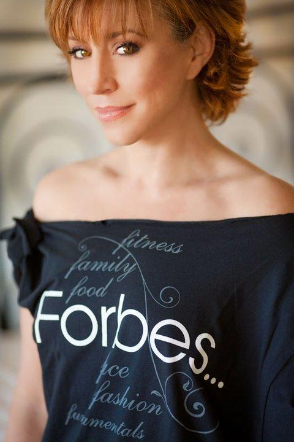
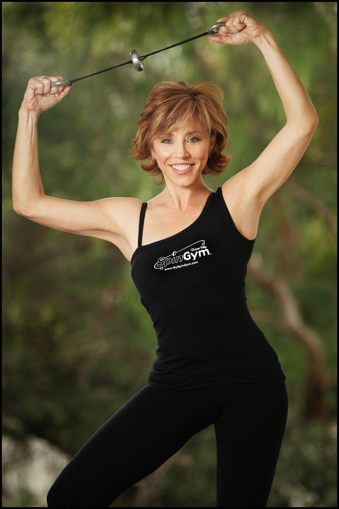

So WHO is Forbes Riley?

- If you look up in the dictionary the words “perseverance and determination”, there is a picture of Forbes Riley. As a little girl she overcame a disfiguring accident, having her mother being held hostage by gunpoint in her home, and a tragic accident that landed her father in the hospital for over 3 years while she was a teenager. While most young girls in her position might have thrown in the towel, Forbes learned early on the power of forging ahead, even when there is no end in sight and everyone tells you it’s not possible. Another major obstacle Forbes fought was her weight – now to most people that’s a typical struggle, but when you have dreams of being a Broadway dancer and actress it became monumental. She worked in spite of hurtful comments and rejection and acted in TV (24, The Practice), movies, hosted TV shows (ESPN’s X-Games, her own talk show on TLC, and a series for ABC Family. Finally, after two decades of humiliation she managed to turn her weight and eating around when at age 42 she gave birth to 7-pound twins and co-hosted the Jack Lalanne Juicer infomercial, which aired worldwide for 8 consecutive years and grossed more than $1 Billion dollars. She not only managed to influence and inspire millions of moms to find their personal happiness with their bodies, but to land in the National Fitness Hall of Fame alongside some of her fitness heroes. Forbes has prided herself never having had a job, but always managing to make a living, start businesses and follow her dreams. Now with a multi-million dollar fitness empire, books, a new TV series on health and wellness, she inspires all of us to believe that “If You Leap, the Net will Appear.”
- SpinGym is the name Forbes Riley coined for a unique fitness gadget she found on a business trip to London that was being used as a “destresser” in the office. The company wasn’t doing particularly well and when she tried this product for the first time, she “had a vision” for the entire rest of her life. Suzanne Somers is to ThighMaster as Forbes Riley is to SpinGym. ThighMaster sold more than 10 million units and is pop iconic. With her background in dance, 30 years as a martial artist (which came about after she was mugged in LA), licensed massage therapist, and certified personal trainer, she has profound and unique understanding of the human body. Forbes is also one of the top infomercial hosts in the country with more than 110 National Infomercials to her credit, so she was asked to launch her brainchild on the Discovery TV series Pitchmen with Billy Mays. Sadly reality TV is anything but and both she and SpinGym were put in a very bad light and became the protagonist on the show. The morning after the public debacle, there were over 15,000 scathing YouTube comments – more than enough to shatter the typical person. Forbes having never manufactured a product, or dealt with overseas shipping or even the notion on how to market a fitness product, turnerd to her husband and asked to risk everything they had to make this dream of SpinGym come to fruition. On blind faith, they mortgaged their house along with their kid’s college funds to raise the money for the first 10,000 SpinGyms. Then it got worse! Between struggles with language barriers (it’s manufactured in China), customs and a shady broker it took more than 8 months before they finally saw a finished product. At the end of the rope for most people, Forbes has one ace up her sleeve – her ability to communicate on TV mixed with her passion for this product – she took her drive and commitment to HSN (who they wanted to pass on it, after seeing it bomb
on PitchMen) and they placed a minimum order of 5000. On January 4th, 2010 Forbes Riley sold out 5500 SpinGyms in just 34 minutes and has to date, sold more than 10,000 a month, every month since then on the network. Since January, with introduction of her Pink SpinGym, Forbes has sold more in 2012, than she did in all of 2011. In addition to home shopping she has shot an infomercial, launched in 34 countries and has developed internet and fitness club strategies as well as directives with rehab and physical therapy centers. Her SpinGym postings along with those of her fans have inspired millions – the most moving of which include quadriplegics, war vets, and several young teens who are fighting muscular dystrophy. Beyond SpinGym, Forbes speaks around the country, attending health and fitness expos and is on a mission to help others achieve their physical and financial dreams!
- In an industry like fitness and rehab they are slow to adopt new ideas – It has taken 80 years for yoga and Pilates to finally become mainstream. SpinGym is what’s called disruptive technology – a new idea, invention that makes people question what they are currently using and often it takes time to implement, if ever. Sadly, the inventor or marketer may struggle their whole lives knowing they have something valuable and important but people may never get to experience it. That is how Forbes sees SpinGym her relentless dedication, and passion for getting EVERYONE this product has become her mission. People often talk about how even though she will sell ten thousand in a day on HSN, she will sell one on the plane to the flight attendant, someone standing in line at Starbucks and even to someone naked in the sauna. To grow this plan Forbes has taken her profits from SpinGym and built from the ground up, a 5,000 sq. ft. building to be used as an Inventors Dream Center and media/production facility. With the explosion of video and the internet, content is king and Forbes has just completed her first 2 books with 3 more in the works as well as the 6 week non-diet transformation program called e.a.t.
- As someone who grew up struggling financially and then watching both her parents and countless friend die from cancer – Forbes has a powerful desire to give back and has many philanthropic outlets. In her 20’s she started working with Dressed for Success so that women would not be held back by the fact they did own a business suit. In her 30’s she and her husband focused on Big Brother’s/Big Sister’s of Greater Los Angeles until sadly after 12 years of fostering care for “little brother” Dexter, he was murdered just outside of South Central. Together she and her husband spent 3 years and 10’s of thousands of dollars to find the truth and today his killer is spending 52 years to life in prison. A Foundation was set up in his name to help inner city kids find mentors and hopefully understand a better life is possible. Her list of charities and organizations extends to Make a Wish, Clothes to Kids, Abilities Foundation and a percentage of each pink SpinGym is donated to cancer survivors through Gulfport Medical. As a TV host/emcee and auctioneer, Forbes donates her time almost every weekend to help someone.
Within her companies Forbes Riley is the “fit n fun CEO”, spreading a culture of harmony, growth, and support along with good food and exercise and impeccable customer service. She will often sit in the call center and answer phones just to connect with people. Forbes says “I love to hear the squeal when they realize it’s me, they’ve come to know me from TV, so it shocks them when I pick up the phone and really want to talk to them about their health, wellness and SpinGym”
Click HERE!
Get YOUR SpinGym NOW!
6 comments from the original site
Frank · September 2, 2016
Such an inspiration
Eileen Bautista · June 3, 2018
I love the SpinGym…I can take it with me anywhere. It works every muscle in your arms, neck, back and there is a workout sheet and video that shows you how to work your lower body & abs.
Beverly Argao Wiggins · July 11, 2018
Hi Forbes,
I’m Beverly Wiggins, Retired Miss Commerce Pageant Director…You were our celebrity judge & guest speaker the year you had the twins. Love my pink Spin Gym, your enthusiasm & inspiration.
After 42 years of marriage, being baby boomers, my husband & I are on YouTube: Bill & Bev Comedy Duo. You crossed my path & thank you for being a terrific mentor. God Bless.
Love ya,
Bev
Forbes Riley · July 25, 2018
Beverly — my heart and spirit just smiled reading this post — THANK YOU! share with me where you live as I’m starting a book tour for my latest inspiration
Robert T Egnoski · October 15, 2018
OH MY!! I just heard about you from a friend of a friend. I am AMAZED at what I just read about you.
Beverly Argao Wiggins · May 8, 2019
Hi Forbes,
It’s Beverly Wiggins again…Miss Commerce Pageant Director & YouTube Bill & Bev Comedy Duo. Almost a year later I found you wrote me back asking to share my address since you were starting a book tour. I probably missed it… but Please include me…I’m currently writing my book, too. No one has ever “walked in my shoes”. I also want to share…I’m a “Guest Speaker” at East Los Angeles College – Public Relation/Journalism Dept.
Even with a wide age difference between the students & myself, they still give me a nice applause!
Thank you for reaching out to me…Beverly Argao Wiggins (bawiggins52@gmail.com)
24156 Meadow Falls Dr. Diamond Bar, CA 91765
Please watch our YouTube Bill & Bev Comedy Duo (6,700 views!)
Love ya, Bev